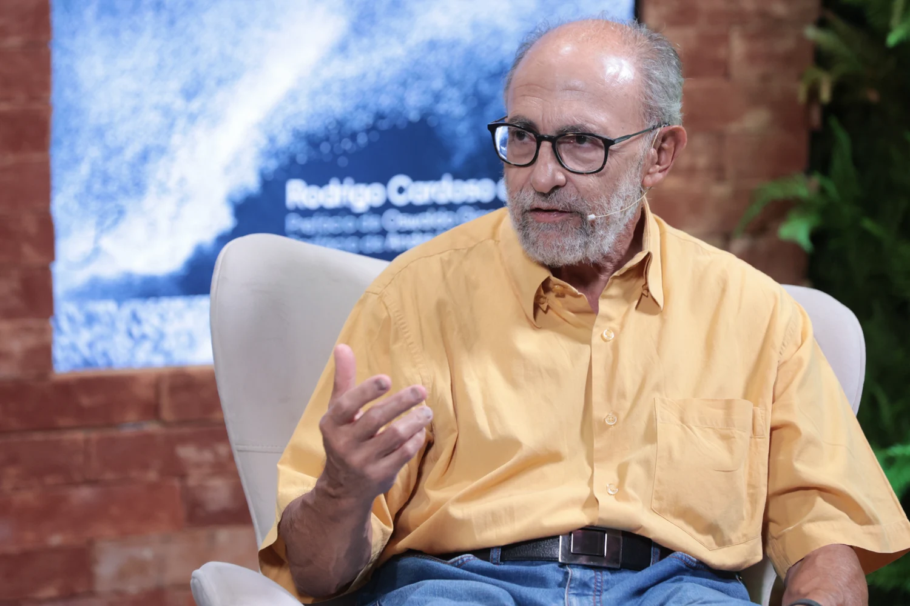

Prefácio
Oswaldo Giacoia Jr.
Professor titular do Departamento de Filosofia da Unicamp desde 2013 e docente do Programa de Pós-Graduação em Filosofia da PUCPR desde 2020, Giacoia é especialista na obra de Nietzsche. Em Nietzsche versus Kant, dedica um livro ao debate sobre liberdade, autonomia e dever.
Graduado em Filosofia pela PUC-SP e em Direito pela USP, ambos em 1976, obteve o título de mestre em Filosofia (PUC-SP, 1983) e doutorou-se pela Freie Universität Berlin (1988), onde também realizou um dos seus pós-doutorados, ao lado de estágios avançados em Viena e Lecce.
Sua obra atravessa com profundidade temas como ética, metafísica, filosofia do direito, psicanálise e teoria da cultura, com ênfase em autores como Nietzsche, Schopenhauer, Freud e Comte.
Currículo Lattes de Oswaldo Giacoia Jr.